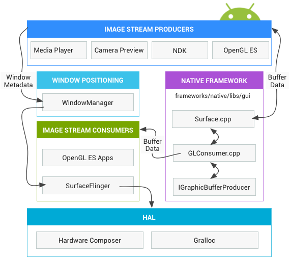
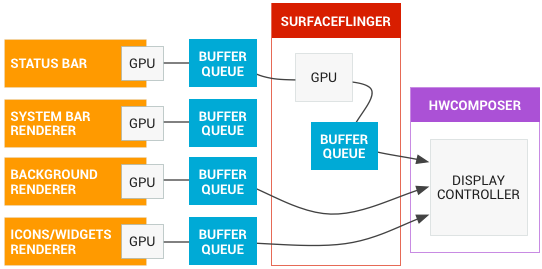
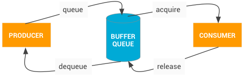

The Android framework offers a variety of graphics rendering APIs for 2D and 3D that interact with manufacturer implementations of graphics drivers, so it is important to have a good understanding of how those APIs work at a higher level. This page introduces the graphics hardware abstraction layer (HAL) upon which those drivers are built.
Application developers draw images to the screen in three ways: with Canvas, OpenGL ES, or Vulkan.
No matter what rendering API developers use, everything is rendered onto a "surface." The surface represents the producer side of a buffer queue that is often consumed by SurfaceFlinger. Every window that is created on the Android platform is backed by a surface. All of the visible surfaces rendered are composited onto the display by SurfaceFlinger.
The following diagram shows how the key components work together:
Figure 1. How surfaces are rendered
The main components are described below:
An image stream producer can be anything that produces graphic buffers for consumption. Examples include OpenGL ES, Canvas 2D, and mediaserver video decoders.
The most common consumer of image streams is SurfaceFlinger, the system service that consumes the currently visible surfaces and composites them onto the display using information provided by the Window Manager. SurfaceFlinger is the only service that can modify the content of the display. SurfaceFlinger uses OpenGL and the Hardware Composer to compose a group of surfaces.
Other OpenGL ES apps can consume image streams as well, such as the camera app consuming a camera preview image stream. Non-GL applications can be consumers too, for example the ImageReader class.
The hardware abstraction for the display subsystem. SurfaceFlinger can delegate certain composition work to the Hardware Composer to offload work from OpenGL and the GPU. SurfaceFlinger acts as just another OpenGL ES client. So when SurfaceFlinger is actively compositing one buffer or two into a third, for instance, it is using OpenGL ES. This makes compositing lower power than having the GPU conduct all computation.
The Hardware Composer HAL conducts the other half of the work and is the central point for all Android graphics rendering. The Hardware Composer must support events, one of which is VSYNC (another is hotplug for plug-and-playHDMI support).
The graphics memory allocator (Gralloc) is needed to allocate memory requested by image producers. For details, see Gralloc HAL.
See the following diagram for a depiction of the Android graphics pipeline:
Figure 2. Graphic data flow through Android
The objects on the left are renderers producing graphics buffers, such as the home screen, status bar, and system UI. SurfaceFlinger is the compositor and Hardware Composer is the composer.
BufferQueues provide the glue between the Android graphics components. These are a pair of queues that mediate the constant cycle of buffers from the producer to the consumer. Once the producers hand off their buffers, SurfaceFlinger is responsible for compositing everything onto the display.
See the following diagram for the BufferQueue communication process.
Figure 3. BufferQueue communication process
BufferQueue contains the logic that ties image stream producers and image stream consumers together. Some examples of image producers are the camera previews produced by the camera HAL or OpenGL ES games. Some examples of image consumers are SurfaceFlinger or another app that displays an OpenGL ES stream, such as the camera app displaying the camera viewfinder.
BufferQueue is a data structure that combines a buffer pool with a queue and uses Binder IPC to pass buffers between processes. The producer interface, or what you pass to somebody who wants to generate graphic buffers, is IGraphicBufferProducer (part of SurfaceTexture). BufferQueue is often used to render to a Surface and consume with a GL Consumer, among other tasks. BufferQueue can operate in three different modes:
Synchronous-like mode - BufferQueue by default operates in a synchronous-like mode, in which every buffer that comes in from the producer goes out at the consumer. No buffer is ever discarded in this mode. And if the producer is too fast and creates buffers faster than they are being drained, it will block and wait for free buffers.
Non-blocking mode - BufferQueue can also operate in a non-blocking mode where it generates an error rather than waiting for a buffer in those cases. No buffer is ever discarded in this mode either. This is useful for avoiding potential deadlocks in application software that may not understand the complex dependencies of the graphics framework.
Discard mode - Finally, BufferQueue may be configured to discard old buffers rather than generate errors or wait. For instance, if conducting GL rendering to a texture view and drawing as quickly as possible, buffers must be dropped.
To conduct most of this work, SurfaceFlinger acts as just another OpenGL ES client. So when SurfaceFlinger is actively compositing one buffer or two into a third, for instance, it is using OpenGL ES.
The Hardware Composer HAL conducts the other half of the work. This HAL acts as the central point for all Android graphics rendering.